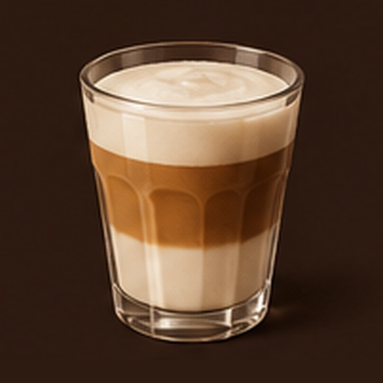

espresso con un toque de espuma de leche
«Macchiato» significa «manchado» en italiano: es un espresso «manchado» con un toque de espuma de leche. Se cuenta que nació en los cafés italianos para que el camarero pudiera distinguir un espresso con un poco de leche de uno sin ella. Es una bebida pequeña e intensa, con el sabor del espresso apenas suavizado.